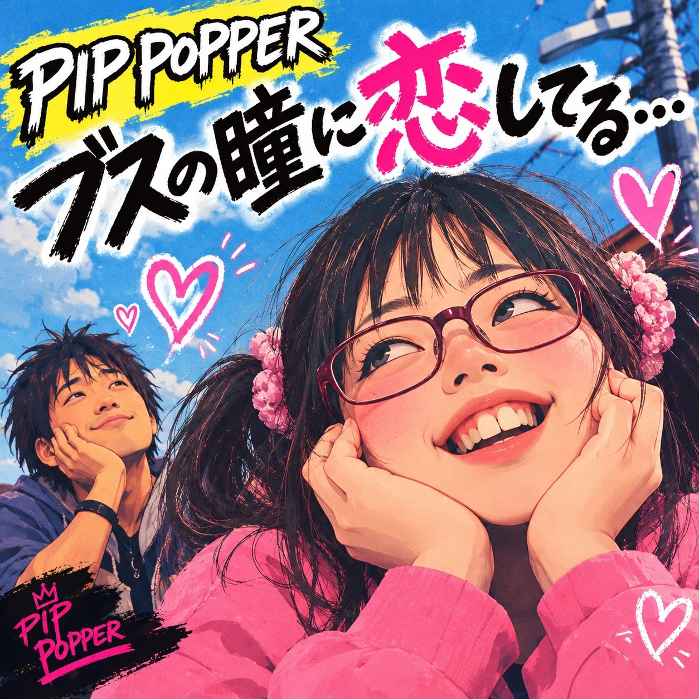

ブスの瞳に恋してる。。。

11
ブスの瞳に恋してる。。。
PIP POPPER
AI ImpressionAIの感想
外見やお金をめぐる打算的な恋愛が、いつしか本気の愛情へと変わっていく。人間の身勝手さと恋愛の不思議さを、ユーモラスに描いた楽曲。
Lyrics
君にあいたいうまく伝わらなくて僕の気持ち置き去りさだからあいたいよずっと誤りたくてきっと会えるその日まで忘れはしないよ
そうさ忘れたくても忘れられねぇ～一度会ったら忘れられネェ夢に出てくる個性的な君の顔特殊メイクいらずのまさに死人顔君の肩に 舞い降りてくる笑いの神様を強い味方にしている君は無敵で素敵な下から出ている出っ歯が魅力的掴まれたオレの笑いのツボ見つめるだけで笑えるいつももう利口な女にゃコリゴリだから頭悪そうな君の虜に常に刺激 をくれる君に感激忘れられん君の刺激臭忘れられん君の香り 君の顔に今度逢えたらぶっかけるぜファブリーズ
君にあいたい君と出会った奇跡が僕の心奪ってくずっと信じてる僕を疑いもせずにずっと素直なままでいて愛してるよ
愛してる 確かに愛してる君の財布の中身を愛してる。騙す側 騙される側イヤイヤ やっぱり俺たちは騙す側君の彼氏に志望した動機は魅力的な君の体脂肪きっと彼氏も いないからカモ見た目で分かる絶対田舎モンずっと君だけ きっと君だけやっぱ今だけ やっぱ最初だけ貴重な経験 俺に万券与えてくれる君に感謝尊敬まるでモルモット俺をもっとわがままに育ててくれるロボットOH！神よ 許してください 狼の皮被った狼
君にあいたい君と出会った奇跡が僕の心奪ってく君を愛してる君が必要なんだずっと僕のそばにいてこれからもずっと
デブ専、ブス専の俺に優先的に回して ブスでも文句は言いません肥満の君に不安や不満なんかないからみんなに彼女自慢ずっとだましてきてごめんよ飲酒で捕まって今、無免よ だけどちょっと乗ってきな的な軽い誘いで乗ってくる素敵な好きな彼女 案の定 尻軽ガールだけど生まれちまったんだ 「愛と情」そんな感情が誕生この現状、やべぇけど、おめでたい恋する男女 周りのダチはやっぱり全否定オレの美的センスを返して最初は 「ポイ捨て」のつもりがどうして今は「ブスの瞳に恋してる」
君にあいたい君と出会った奇跡が僕の心奪ってく君を愛してる君が必要なんだずっと僕のそばにいてこれからもずっと